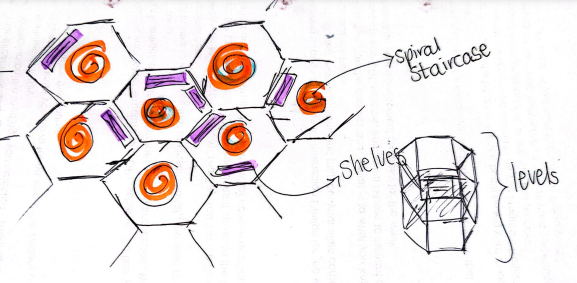

Blog Post 1
Setting Up Github
In order to keep track of our progress on our website and to submit our website, we were required to set up GitHub Desktop, join an organisation on Git as well as join GitHub Pages. Because I have used GitHub for other projects, GitHub Desktop was already downloaded and set up. We then needed to join the GitHub organisation (https://github.com/Wits-Digital-Arts-Interactive-Media ) in which Dr Geyser added us to via our usernames and emails. Setting up GitHub Pages was a bit challenging as I had never done it before. I used this site (https://pages.github.com/) to do so. I had to create an index.html file which I decided to rename as mainMenu.html. I then needed to add, commit and push the changes. Following the instructions in the site as well as the in-person lecture allowed for an easy, smooth set up to Pages.
Analysis of Readings
As We May Think by Vannevar Bush
“As We May Think” by Vannevar Bush (link) was written in 1945 that explores his vision of how information will be stored and how one can retrieve this information. Bush had a very unique and forward thinking approach in retrieving knowledge fast and efficiently. Whilst reading this article I was amazed at how accurate he was at predicting or rather being a part of the development of the World Wide Web as we know it today. He predicted that photographs would not need to be wetted at all. Of course we know that this is true today. He predicted that one would be able to snap pictures and view them immediately. Taking photographs on cameras and our phones is second nature to us. It is so interesting that a man in the 1940’s was able to predict these things.
Bush explores the concept of compression by envisioning that large books with hundreds of pages could be compressed to the volume of a matchbook. Our mobile phones are just larger than a matchbook and they can store hundreds of thousands of books, links and information. Bush predicted that one would be able to verbally talk to machines that would be able to type the words out by itself. Siri can do this very easily!
The main thing that grabbed my attention in this article was Bush’s “Memex”. The Memex is a hypothetical device that could store and link large amounts of information, allowing individuals to access and retrieve knowledge quickly. The device incorporated an indexing system, allowing users to create associative trails of interconnected information. This concept is very similar to the hypertext system we use today. The device allowed for associative linking instead of linear linking creating a new way of linking information and knowledge. Bush also mentions that this device will be tailored to the users specific needs. Bush also emphasised the importance of quick and efficient retrieval of information. All of these aspects are present in our modern world. Our mobile phones are compact, personalised devices that have the ability to access the internet and the World Wide Web which has an associative linking system that allows users to retrieve information in seconds. It is clear that Bush was way ahead of his time and that his visions are very present in today’s world.
The Library of Babel by Jorge Luis Borges
“The Library of Babel” by Jorge Luis Borges (link) was written in 1941 and is a very unique piece of writing. At first I found the reading quite confusing however after reading it a few times, drawing some visual representations of Borges theory and doing some external research it made much more sense. In my understanding, Borges explores an idea of having an infinite library of books of all kinds of lengths. Borges mentions, "The orthographical symbols are twenty-five in number." These symbols or characters include the comma and the period as well as the twenty two letters of the alphabet, making it twenty five in number. At first, I wondered why the author would only have twenty two letters instead of twenty six. The Jewish alphabet contains twenty two letters and so I think what the author is trying to imply is that the library contains characters that when placed together in very specific ways, a vast amount of information and knowledge can be shared. The article explores a metaphorical idea of a structure or library that is hexagonal in shape. The below image is how I understood his analogy.
The narrator explains the chaotic nature of the library and how difficult it is to find meaningful books within it. The article raises questions about the nature of knowledge and how one attains it. It raises the question of how individuals will search for meaning in a seemingly random and limitless universe. Borges invites the reader to reflect on the vastness and complexity of information and the challenges of finding meaning in a sea of possibilities.
In this article Borges suggests that even with infinite information at one’s disposal, it may be purposeless to pursue knowledge. How, for example, is it possible for any person to sift through what information is factual or fictional, what has been manipulated or is real, what bears witness to the common good and enhances it vs what pollutes and draws away from the higher good? In my opinion Borges explains his metaphors in a very unique way that I think relate to the internet and the World Wide Web of today. The Web is an interconnected structure of ‘rooms’ with infinite ‘books’ of ‘characters’ and symbols that translate a vast amount of knowledge to individuals.
Borges and Bush both have speculative writings. These articles were written before the internet and the WWW but both writings have very relevant themes in these fields.
Interesting Things About the History of the Web
In order to get a better understanding of the WWW and the Internet, I decided to look up fun facts about the two.
https://www.syndacast.com/21-interesting-facts-about-the-internet/ https://www.interestingfacts.com/world-wide-web-facts/Yzu4Ag0dXgAH6ve6I find these facts really interesting as they give me a completely different view of the WWW and the internet. Imagine the Web was actually called the Mesh! I think both these words use very descriptive wording in summarising what the WWW really is.
Goals For This Course
- Understand the vast history of how the internet was created.
- Research what technology was available before I was born to create a better sense of the timeline in my mind.
- Create a website that reflects my personality.
- Become competent in writing code to create a website.
- Get a better understanding of Javascript, CSS, and HTML.
- Have a fully functional website that I could use as a CV when I decide to apply for a job.
- Become better at writing through these blog posts.
- Learn and grow as a student!